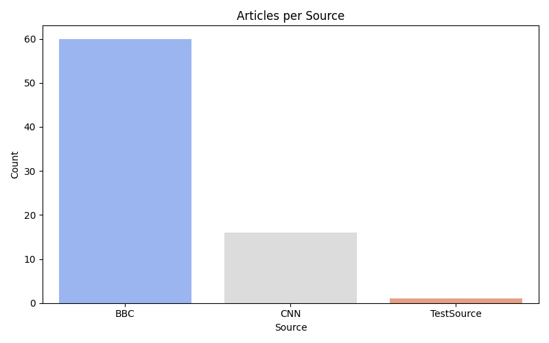
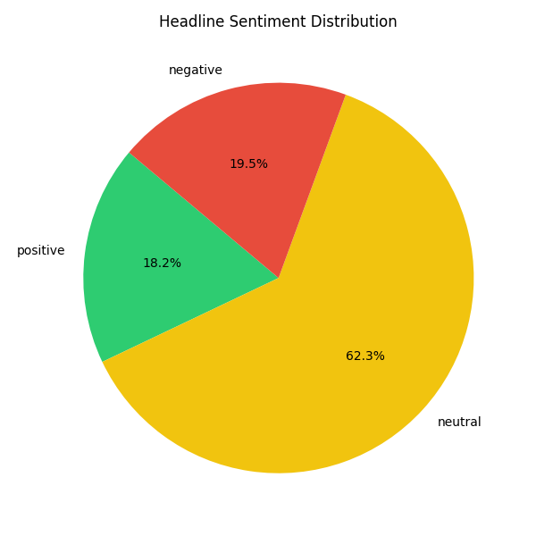

📰 News Scraping Final Report
Total Articles: 77
📊 Articles per Source
- BBC: 60
- CNN: 16
- TestSource: 1

🧠 Sentiment Analysis

🔑 Top Keywords
- says: 9
- glastonbury: 8
- iran: 6
- after: 5
- police: 4
- gaza: 3
- trump: 3
- could: 3
- like: 3
- been: 3
Generated automatically using Python